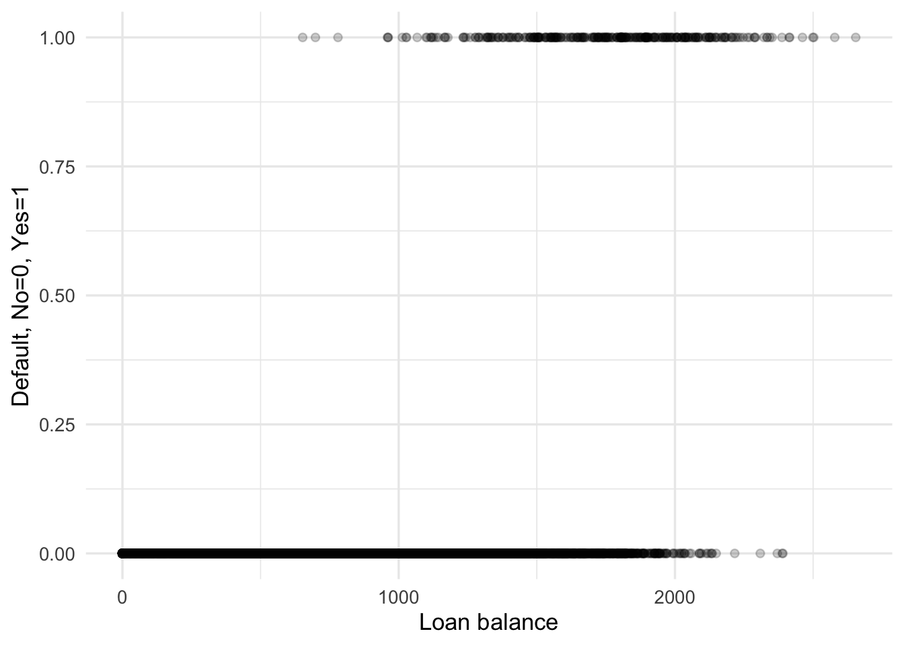
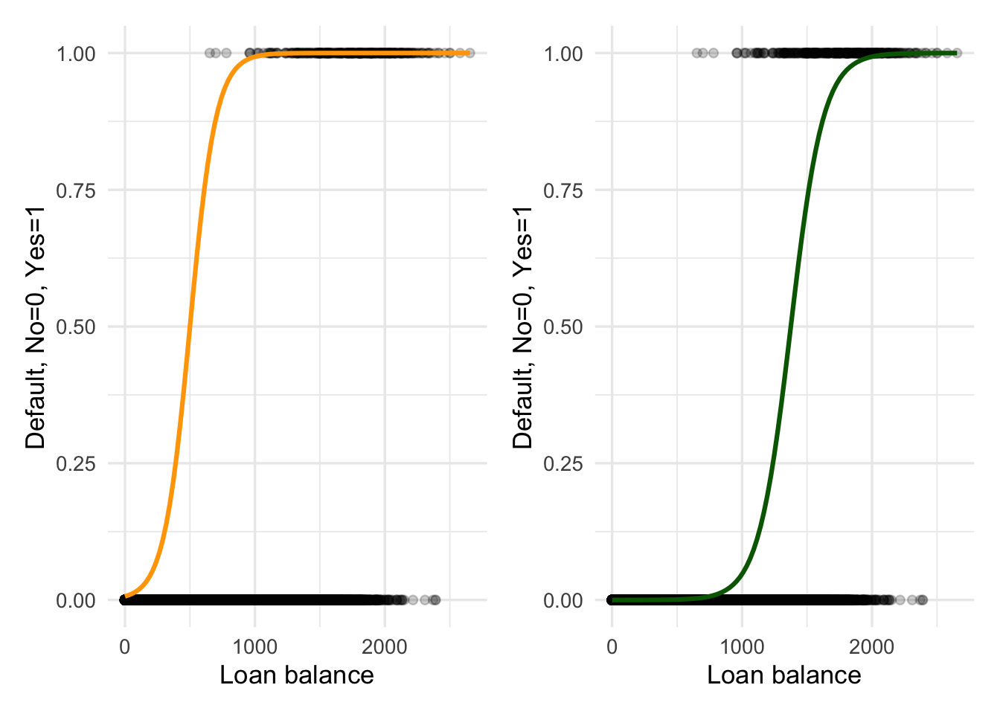
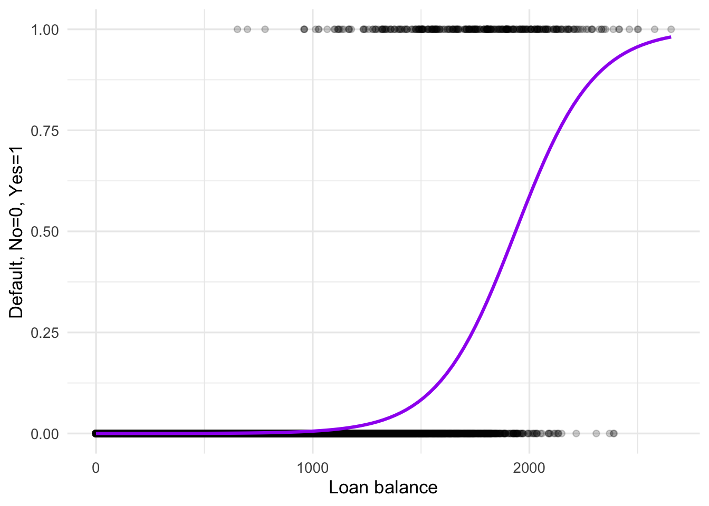
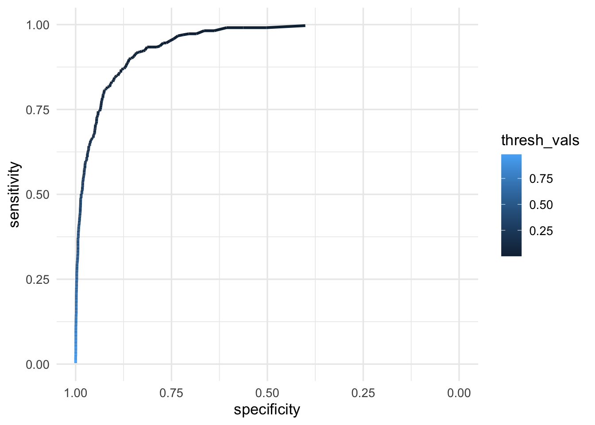
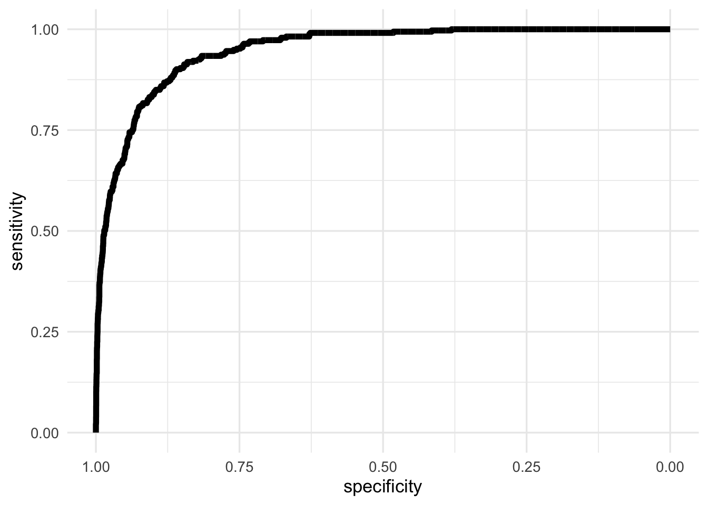

Lesson 4
Introduction to Classification
Learning Objectives
After this lesson, students will be able to:
Define the problem of classification.
Fit a logistic regression model.
Define the k-Nearest Neighbor algorithm.
Create and interpret an ROC curve.
Readings, etc.
For this lesson:
Read chapter 3 of Statistical Learning with Math and R (Suzuki 2020). You may also want to read chapter 4 from of An Introduction to Statistical Learning (Tibshirani et al. 2017).
Watch the corresponding video lecture on classification. View on YouTube.
- The video on logistic regression might also be helpful. View on YouTube.
Overview
In a classification problem, we assume a functional relationship of the form
\[ y = f({\bf x}) + \epsilon \]
where the response variable \(y\) takes values in a finite set. The \(y\) values will often correspond to classes or categories and this is why we call this problem classification. Classification is a common problem for machine learning, perhaps even more common than regression. There are two general approaches to classification:
predict the values of \(y\), that is, the classes directly, or
predict the probabilities for \(y\) to be in each of the relevant classes.
The approach in 2 has the benefit that we can think of classification as a regression problem since probabilities are numerical quantities. On the other hand, any regression problem can be recast as a classification by binning or otherwise discretizing the response variable.
A special case of classification is binary classification which is the situation where the response \(y\) can take on but two distinct values. We will begin out study of classification by looking at binary classification and logistic regression which is a common approach to binary classification.
Logistic Regression
Suppose that we have labelled data \(({\bf x}_{1},y_{1}), ({\bf x}_{2},y_{2}), \ldots , ({\bf x}_{n},y_{n})\) such that for each \(i\), \(y_{i} \in \{0,1\}\). That is, the response variables can take on only two distinct values. Our goal is to build a model that can predict
\[ p({\bf x}) := P(y = 1 | {\bf x}) \] The method of logistic regression is to build a model of the form
\[ p({\bf x}) = \frac{e^{\beta_{0} + \beta_{1}x_{1} + \beta_{2}x_{2} + \cdots + \beta_{p}x_{p}}}{1 + e^{\beta_{0} + \beta_{1}x_{1} + \beta_{2}x_{2} + \cdots + \beta_{p}x_{p}}} \]
From which we can derive the expression
\[ \log\left( \frac{p({\bf x})}{1 - p({\bf x})} \right) = \beta_{0} + \beta_{1}x_{1} + \beta_{2}x_{2} + \cdots + \beta_{p}x_{p} \] We call the expression
\[ \log\left( \frac{p({\bf x})}{1 - p({\bf x})} \right) \]
the log odds or logit.
Note: While the probability \(P(Y = 1| {\bf x})\) is not a linear function of the predictor variables, the log odds is a linear function of the predictor.
We refer to a function of the form
\[ f(x) = \frac{e^x}{1 + e^x} \]
as a logistic function.
Let’s develop some motivation and intuition for logistic regression. Consider the Default data set from the ISLR2 package. The first few rows of the data are shown below:
| default | student | balance | income |
|---|---|---|---|
| No | No | 729.5265 | 44361.625 |
| No | Yes | 817.1804 | 12106.135 |
| No | No | 1073.5492 | 31767.139 |
| No | No | 529.2506 | 35704.494 |
| No | No | 785.6559 | 38463.496 |
| No | Yes | 919.5885 | 7491.559 |
Our goal is to use one or more of the variables student, balance, or income to predict whether an individual is likely to default on their loan. Here we will think of the values for the response default as \(\text{No} = 0\) and \(\text{Yes} = 1\). To do this, we create a 0-1 version of the response:
Show the code
Default <- Default %>%
mutate(default_01 = ifelse(default == "No",0,1))
glimpse(Default)Rows: 10,000
Columns: 5
$ default <fct> No, No, No, No, No, No, No, No, No, No, No, No, No, No, No,…
$ student <fct> No, Yes, No, No, No, Yes, No, Yes, No, No, Yes, Yes, No, No…
$ balance <dbl> 729.5265, 817.1804, 1073.5492, 529.2506, 785.6559, 919.5885…
$ income <dbl> 44361.625, 12106.135, 31767.139, 35704.494, 38463.496, 7491…
$ default_01 <dbl> 0, 0, 0, 0, 0, 0, 0, 0, 0, 0, 0, 0, 0, 0, 0, 0, 0, 0, 0, 0,…Let’s begin by focusing on just balance as a predictor. We can plot the default variable versus the balance:
Show the code
Default %>%
ggplot(aes(x=balance,y=default_01)) +
geom_point(alpha=0.2) +
labs(x="Loan balance",y="Default, No=0, Yes=1") 
Question: What does the plot in Figure 1 suggest?
The goal of logistic regression is to fit the in some sense best logistic function to the data. Let’s compare a couple of different logistic functions as candidate models for the Default data. Figure 2 shows two different logistic curves plotted over the Default data.
Show the code
f_1 <- function(x){ exp(-5 + 0.01 * x) / (1 + exp(-5 + 0.01 * x))}
f_2 <- function(x){ exp(-11 + 0.008 * x) / (1 + exp(-11 + 0.008 * x))}
p_1 <- Default %>%
ggplot(aes(x=balance,y=default_01)) +
geom_point(alpha=0.2) +
stat_function(fun = f_1,color="orange",linewidth=1.1) +
labs(x="Loan balance",y="Default, No=0, Yes=1")
p_2 <- Default %>%
ggplot(aes(x=balance,y=default_01)) +
geom_point(alpha=0.2) +
stat_function(fun = f_2, color="darkgreen",linewidth=1.1) +
labs(x="Loan balance",y="Default, No=0, Yes=1")
p_1 + p_2
Question: Which of the two logistic curves in Figure 2 do you think is a better fit for the Default data? Explain your answer.
The problem for us now is, how do we define and determine the “best-fit” logistic function for binary classification? Minimizing the squared error for the residuals is not going to work well in this situation (why not?).
Likelihood Optimization
The likelihood function is the probability of the observed data viewed as a function of the model parameters. Then, we define the best-fit logistic curve to be the one that maximizes the likelihood.
Note: We point out again that machine learning methods often involve solving some kind of optimization problem and we see that this is the case with logistic regression.
How should we maximize the likelihood function which is a multi-variable function? One approach is of course to find critical points by computing and setting the partial derivatives to zero and then use the Hessian criteria to confirm there is a maximum. There is a trick that makes this a little easier, that is, rather than maximize the likelihood function, it’s typical to maximize the log-likelihood. Because the \(\log\) function converts products into sums, this makes it easier to compute partial derivatives.
Luckily for us, the maximum likelihood method for logistic regression is already implemented in R through the glm function, where glm stands for generalized linear model. For example,
default_fit_1 <- glm(default_01 ~ balance, data=Default, family="binomial")
coef(default_fit_1) (Intercept) balance
-10.651330614 0.005498917 gives the maximum likelihood estimated values for \(\beta_{0}\) and \(\beta_{1}\). Let’s plot the corresponding logistic function:
Show the code
f_best <- function(x){ exp(-10.65 + 0.0055 * x) / (1 + exp(-10.65 + 0.0055 * x))}
Default %>%
ggplot(aes(x=balance,y=default_01)) +
geom_point(alpha=0.2) +
stat_function(fun = f_best, color="purple",linewidth=1.1) +
labs(x="Loan balance",y="Default, No=0, Yes=1") 
Question: How does the maximum likelihood estimated logistic curve compare with the two from Figure 2?
We can use our logistic regression model to make predictions. For example, suppose our friend has a balance of $800, are they likelihood to default on their loan? We can answer this as follows:
(default_800_odds <- predict(default_fit_1,newdata=tibble(balance=800))) 1
-6.252197 (default_800_prob <- predict(default_fit_1,newdata=tibble(balance=800),type="response")) 1
0.001922514 We see that the log-odds is very small which corresponds to a very small probability of default. Notice the relationship between the probability and the log-odds:
log(default_800_prob / (1 - default_800_prob)) 1
-6.252197 On the other hand, if our friend has a balance of $2,200 then
(default_2200_odds <- predict(default_fit_1,newdata=tibble(balance=2200))) 1
1.446287 (default_2200_prob <- predict(default_fit_1,newdata=tibble(balance=2200),type="response")) 1
0.8094263 and we see that the predicted probability of default is high. A question we will return to soon is, how does the probability of default relate to classifying defaults as “no” or “yes”?
We can just as easily fit a logistic regression model with more than one predictor. For example,
default_fit_2 <- glm(default_01 ~ balance + income + student, data=Default, family="binomial")
coef(default_fit_2) (Intercept) balance income studentYes
-1.086905e+01 5.736505e-03 3.033450e-06 -6.467758e-01 Which of the two models is better remains an open question and we will address this and other topics related to logistic regression later.
Classification Errors
Suppose we work for a loan company and our boss isn’t interested in the probability that a borrower will default and just wants to know if someone is likely to default or not. One way to deal with this is to choose a cutoff value for the probability of default and classify borrowers with probability of default greater than the threshold value as likely to default. For example, suppose we classify any borrower with a probability of defaulting greater than 50% as likely to default. This will inevitably lead to some amount of misclassification. We can calculate this for our data and model:
default_fit_1_preds <- predict(default_fit_1,type="response")
default_fit_1_class <- (default_fit_1_preds > 0.5) %>% as.numeric()
(cm_tbl <- table(Default$default_01,default_fit_1_class)) default_fit_1_class
0 1
0 9625 42
1 233 100This says that there were 42 loans that did not default but the model classified as defaults. That is, the model produced 42 false positives. On the other hand, the model classified 233 loans that did default as non-defaults. That is, the model produced 233 false negatives. From these numbers, we can compute the accuracy:
Show the code
(cm_tbl[1,1] + cm_tbl[2,2]) / (sum(cm_tbl))[1] 0.9725or using a function from tidymodels
Show the code
tibble(true_defaults = as.factor(Default$default_01),
pred_defaults = as.factor(default_fit_1_class)) %>%
accuracy(true_defaults,pred_defaults)# A tibble: 1 × 3
.metric .estimator .estimate
<chr> <chr> <dbl>
1 accuracy binary 0.972These numbers will change if we change the threshold value for classification. For example, what if we set our threshold to 45%?
default_fit_1_preds <- predict(default_fit_1,type="response")
default_fit_1_class <- (default_fit_1_preds > 0.45) %>% as.numeric()
table(Default$default_01,default_fit_1_class) default_fit_1_class
0 1
0 9609 58
1 221 112For later purposes, let’s define the following quantities:
\[ \begin{align*} \text{sensitivity or true positive rate} &= \frac{\text{true positive}}{\text{true positive} + \text{false negative}} \\ \text{specificity or false positive rate} &= \frac{\text{true negative}}{\text{true negative} + \text{false positive}} \end{align*} \]
Then, in our example with the 50% threshold value, the sensitivity is 0.3003003 and the specificity is 0.9956553.
Notice that the sensitivity and specificity are both functions of the probability threshold value used to make the decision about how to classify predicted response values. Let’s write an R function that computes the sensitivity and specificity for any threshold value.
spec_sens <- function(threshold_val){
default_fit_1_class <- (default_fit_1_preds > threshold_val) %>% as.numeric()
conf_mat <- table(Default$default_01,default_fit_1_class)
sensitivity <- conf_mat[2,2] / (sum(conf_mat[2, ]))
specificity <- conf_mat[1,1] / (sum(conf_mat[1, ]))
tibble(sensitivity = sensitivity,specificity = specificity)
}Now, let’s test our function
spec_sens(0.5)# A tibble: 1 × 2
sensitivity specificity
<dbl> <dbl>
1 0.300 0.996ROC Curves
Let’s use our function to compute and plot the sensitivity and specificity values for a range of threshold values.
Show the code
thresh_vals <- seq(0.001,0.981,by=0.001)
spec_sens_df <- map_df(thresh_vals,spec_sens) %>%
mutate(thresh_vals = thresh_vals)
spec_sens_df %>%
ggplot(aes(x=specificity,y=sensitivity,color=thresh_vals)) +
geom_path(linewidth=1.1) +
scale_x_reverse() +
xlim(c(1,0)) +
ylim(c(0,1))
This creates what is known as a receiver operating characteristic (ROC) curve which is is a graphical plot that illustrates the diagnostic ability of a binary classifier system as its discrimination threshold is varied.
The package pROC contains functions that will create an ROC curve for us. For example,
ggroc(roc(Default$default_01,predict(default_fit_1,type="response")),size=2)
The area under the ROC curve (AUC) is a widely used measure of overall performance of a binary classifier because it summarizes the performance over a range of threshold values. Again, the pROC package contains functions that allows us to calculate the AUC:
auc(Default$default_01,predict(default_fit_1,type="response"))Setting levels: control = 0, case = 1Setting direction: controls < casesArea under the curve: 0.948Note that the largest possible value for AUC is 1. Further, we expect a classifies that performs no better than change to have an AUC of 0.5. We see that as a classifier on the Deafault data logistic regression appears to perform well. However, we only computed the AUC for the training data and ultimately what we are interested in is how the model performs on test data. We will return to this issue later.
An important application of ROC curves and AUC is in comparing different types of classifiers. So, we will spend some time learning about other types of classifiers.
KNN
Another approach to classification (and also regression) is to use distance-based methods such as K Nearest Neighbors (KNN). The basic model assumption is that data points that are closer together are more likely to belong to the same class. To implement such models, we need to address two points:
How do we measure distance between data points?
What is our decision rule for classifying a data point when it is close to multiple points from different classes.
Given a particular measure of distance, the KNN algorithm proceeds as follows:
Choose a value \(k\) that is less than or equal to, but typically much less than the total size \(n\) of the observed data.
For a new value \({\bf x}\), find the \(k\) data points that are closest to \({\bf x}\).
Assign to \({\bf x}\) the majority class among its \(k\) nearest neighbors. Note that it may also be necessary to establish a rule for breaking ties.
There is a KNN demo associated with the textbook (Dinov 2018). View the KNN demo.
Let’s work through some KNN examples together in a new R project.
Note: An important application of KNN is to imputation of missing data.
There is one major issue with distance-based classification (or regression) methods. This is an issue known as the curse of dimensionality. The issue is basically that as the dimension of the space that data points belong to increases, the more sparse the data points are within the space. You will be asked to explore this issue further in the homework exercises.
Multi-class Classifiers
In our notebook on KNN and other classification examples, we saw that KNN allows us to build classification models in which there are more than two levels for our categorical response variable. There are other approaches to multi-class classification problems other than KNN. For example, we can extend logistic regression using a so-called softmax coding. Suppose that our response variable \(y\) is categorical with \(K\) levels, then for \(k=1,2,\ldots, K\), we model
\[ P(y = k|{\bf x}) = \frac{e^{\beta_{k0} + \beta_{k1}x_{1} + \cdots + \beta_{kp}x_{p}}}{\sum_{l=1}^{K}e^{\beta_{l0} + \beta_{l1}x_{1} + \cdots + \beta_{lp}x_{p}}} \]
We refer to the right-hand-side of the last expression as a softmax function. The softmax function converts a vector of K real numbers into a probability distribution of K possible outcomes. Notice that for \(k \neq k'\) we have
\[ \log\left(\frac{P(y = k|{\bf x})}{P(y = k'|{\bf x})} \right) = (\beta_{k0} - \beta_{k'0}) + (\beta_{k1} - \beta_{k'1})x_{1} + \cdots (\beta_{kp} - \beta_{k'p})x_{p}. \]
Thus, the log-odds for any pair of of classes is a linear function of our predictor variables. Later in the course, we will utilize the softmax function in our discussion of deep learning methods for classification. Such a regression problem is class multinomial regression.
Multi-class Classification Example Problem
Consider again the penguins data set, the first few rows of which are displayed in Table 1.
| species | island | bill_length_mm | bill_depth_mm | flipper_length_mm | body_mass_g | sex |
|---|---|---|---|---|---|---|
| Adelie | Torgersen | 39.1 | 18.7 | 181 | 3750 | male |
| Adelie | Torgersen | 39.5 | 17.4 | 186 | 3800 | female |
| Adelie | Torgersen | 40.3 | 18.0 | 195 | 3250 | female |
| Adelie | Torgersen | NA | NA | NA | NA | NA |
| Adelie | Torgersen | 36.7 | 19.3 | 193 | 3450 | female |
| Adelie | Torgersen | 39.3 | 20.6 | 190 | 3650 | male |
A problem for this data set is to use the various body measurements of penguins as a way to classify the penguin species. Let’s return to our classification examples project and attempt to model this data using multi-nomial regression.
Preparation for the next lesson
For the next lesson we will cover resampling methods. To prepare for the next lesson, please do the following:
Read chapter 5 from of An Introduction to Statistical Learning (Tibshirani et al. 2017). You may also want to read chapter 4 of Statistical Learning with Math and R (Suzuki 2020).
Watch the corresponding video lecture on cross validation. View on YouTube.
References
Dinov, Ivo D. 2018. “Data Science and Predictive Analytics.” Cham, Switzerland: Springer.
Suzuki, Joe. 2020. Statistical Learning with Math and r. Springer.
Tibshirani, Hastie Robert, Gareth James, and Daniela Witten Trevor. 2017. An Introduction to Statistical Learning. Springer publication.
TipExpand for Session Info
─ Session info ───────────────────────────────────────────────────────────────
setting value
version R version 4.5.2 (2025-10-31)
os macOS Tahoe 26.4
system aarch64, darwin20
ui X11
language (EN)
collate en_US.UTF-8
ctype en_US.UTF-8
tz America/New_York
date 2026-04-02
pandoc 3.6.3 @ /Applications/RStudio.app/Contents/Resources/app/quarto/bin/tools/aarch64/ (via rmarkdown)
quarto 1.9.36 @ /Applications/quarto/bin/quarto
─ Packages ───────────────────────────────────────────────────────────────────
package * version date (UTC) lib source
broom * 1.0.12 2026-01-27 [1] CRAN (R 4.5.2)
dials * 1.4.2 2025-09-04 [1] CRAN (R 4.5.0)
dplyr * 1.2.0 2026-02-03 [1] CRAN (R 4.5.2)
forcats * 1.0.1 2025-09-25 [1] CRAN (R 4.5.0)
ggplot2 * 4.0.2 2026-02-03 [1] CRAN (R 4.5.2)
infer * 1.1.0 2025-12-18 [1] CRAN (R 4.5.2)
ISLR2 * 1.3-2 2022-11-20 [1] CRAN (R 4.5.0)
kableExtra * 1.4.0 2024-01-24 [1] CRAN (R 4.5.0)
lubridate * 1.9.5 2026-02-04 [1] CRAN (R 4.5.2)
modeldata * 1.5.1 2025-08-22 [1] CRAN (R 4.5.0)
parsnip * 1.4.1 2026-01-11 [1] CRAN (R 4.5.2)
patchwork * 1.3.2 2025-08-25 [1] CRAN (R 4.5.0)
pROC * 1.19.0.1 2025-07-31 [1] CRAN (R 4.5.0)
purrr * 1.2.1 2026-01-09 [1] CRAN (R 4.5.2)
readr * 2.2.0 2026-02-19 [1] CRAN (R 4.5.2)
recipes * 1.3.1 2025-05-21 [1] CRAN (R 4.5.0)
rsample * 1.3.2 2026-01-30 [1] CRAN (R 4.5.2)
scales * 1.4.0 2025-04-24 [1] CRAN (R 4.5.0)
sessioninfo * 1.2.3 2025-02-05 [1] CRAN (R 4.5.0)
stringr * 1.6.0 2025-11-04 [1] CRAN (R 4.5.0)
tailor * 0.1.0 2025-08-25 [1] CRAN (R 4.5.0)
tibble * 3.3.1 2026-01-11 [1] CRAN (R 4.5.2)
tidymodels * 1.4.1 2025-09-08 [1] CRAN (R 4.5.0)
tidyr * 1.3.2 2025-12-19 [1] CRAN (R 4.5.2)
tidytuesdayR * 1.2.1 2025-04-29 [1] CRAN (R 4.5.0)
tidyverse * 2.0.0 2023-02-22 [1] CRAN (R 4.5.0)
tune * 2.0.1 2025-10-17 [1] CRAN (R 4.5.0)
workflows * 1.3.0 2025-08-27 [1] CRAN (R 4.5.0)
workflowsets * 1.1.1 2025-05-27 [1] CRAN (R 4.5.0)
yardstick * 1.3.2 2025-01-22 [1] CRAN (R 4.5.0)
[1] /Users/r01235571/Library/R/arm64/4.5/library
[2] /Library/Frameworks/R.framework/Versions/4.5-arm64/Resources/library
* ── Packages attached to the search path.
──────────────────────────────────────────────────────────────────────────────